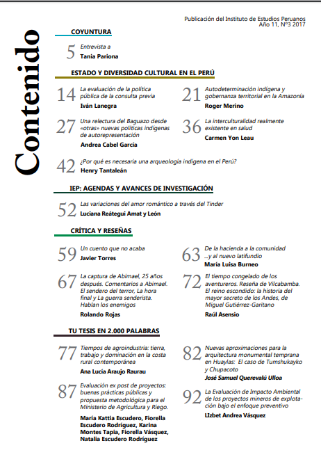
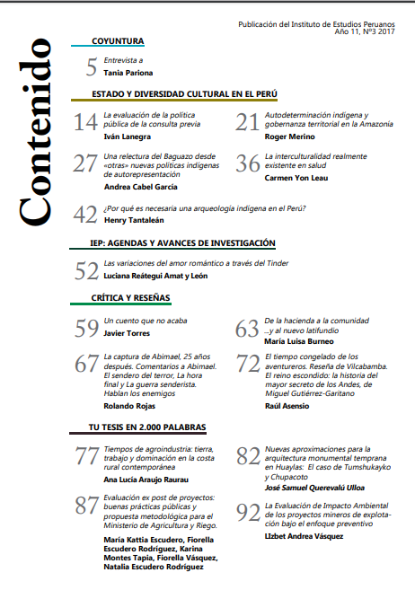

Definir
En esta etapa una vez propuestas la serie de ideas y teniendo la opinión de varios perjudicados y personas que viven a diario, trabajan con el tráfico hemos podido decir y avocar por una de las soluciones para mejorar la gestión vehicula en Arequipa, con respecto a las obras para tener mejores planes y hacer de Arequipa una ciudad con menos tráfico y estrés por este.
 

Definir
Aquí haremos uno de los métodos más conocidos en comparación este es el benchmarking, este es uno de los métodos más conocidos a nivel mundial por hacer y darnos la facilidad para comparar nuestro producto con el de otros que haya y así poder lo que le falta a nuestro producto y mejorarlo para así tener uno de calidad y que cumpla con lo que debe de hacer, en este caso sería un servicio.
Causas de la congestion vahicular
De acuerdo a Thomson (2002), las causas de la congestión vehicular son variadas. Sin embargo, entre los factores que la provocan se encuentran factores de corto y de largo plazo.
- Rápido crecimiento poblacional.
- El uso intensivo de vehículos automotores.
- Crecimiento desmedido del parque automovilístico privado.
- Aglomeración de obras públicas en nuestra ciudad sin un debido plan de desvió.
- Deficiencia en la construcción de infraestructura vial.
El enfoque directo que deseamos dar a nuestro proyecto es el de poder contribuir a la ciudadanía con la debida información que se de en nuestra ciudad así de esta manera poder mantener al público con el mayor conocimiento posible de los problemas que acarrea nuestra ciudad.
Bench Marking
En esta oportunidad realizareos la comparacion con una reista que se basa en el trafico esta es ARGUMENTOS es una revista nacional de impacto social político y económico, ya que esta es una de las que difunde y critica temas de gran interés público.Su primer ejemplar se dio en noviembre de 1992, contando ya con el apoyo de muchos lectores en la capital.
Esta revista en nuestro país posee alrededor de 30 años de fundada, haciéndola una de las primeras revistas nacionales, sus ejemplares actualmente son de gran calidad ya que hoy en día se posee un importante avance tecnológico y la información en ellos esta validada.
Esta revista al tener mucha acogida nos indica que la información brindada en ella es de gran veracidad, adicionalmente a eso se entiende debido a que es una que está formada por critica de distintos especialistas sobre el tema a tratar en el ejemplar.